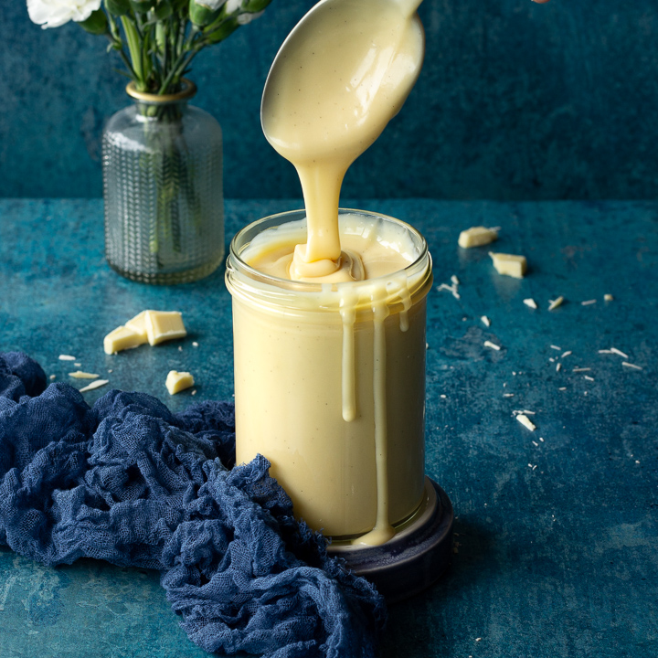

White Chocolate Sauce

A smooth classic with a tiny bourbon kick!
I learned this one from an old coworker of mine. He always had a sweet tooth
and so any time I needed some inspiration for a dessert I'd ask him. This
recipe is one of my favorites that he has shown me.
Ingredients
- 12oz white chocolate chips
- 1 cup of heavy cream
- 2oz of your favorite bourbon
Steps
- Add chocolate chips to a small saucepot.
- How much cream you add is entirely up to you. I like my sauce just a little
bit thick so I dont add much cream. If you like your sauce thinner then it
won't hurt to add extra cream here.
- Put on low heat and try not to simmer. You aren't cooking anything here.
You are just melting the chocolate into the cream.
- Once the chocolate is fully melted, add your bourbon.
Home Page